Entities and Attributes
Metadata Part 1 - Entities and Attributes
This sub-section of the manual deals with the Entities and the Attributes of the Entities. This is all dealt with in the Entities Component.
Entities Component
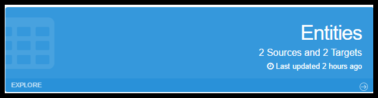
Click Explore OR the word Entities on the Entities component. This will take you to the main Entities grid screen, which lists all the Entities in your Workspace.
Usage
The Entities component has two main purposes:
- Allows you to see the structure of Entities and Attributes that were created when a database or flat file was imported. Entities created by importing databases are referred to as Source Entities.
- Allows for user creation, deletion and modification of Target Entities AND Attributes which are used to store the data that is extracted from Documents Sets during an Attach of a Document Class.
An Entity represents a logical grouping of Attributes. While a bit simplistic, perhaps the easiest way to think of this for now is that Entities are the metadata version of database Tables and Attributes are the metadata version or database Fields.
- If the original data source was a flat file (e.g. .csv), a single Entity would have been created.
- If the source was a JDBC compliant database, many Entities were probably created: one Entity per table you elected to Import.
Entity Screens
Entities Grid screen.
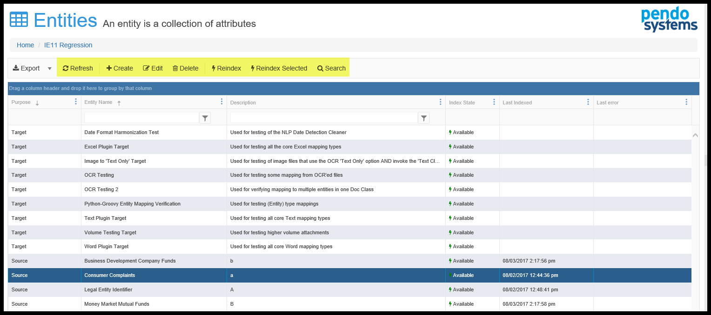
Here you see a grid listing all of the Entities in your Workspace. The various functions available to you depends on the Roles you have been assigned. If you need additional permissions, please contact your administrator. Pendo does not have any access to adjust Permissions on your on-premises installation of the Pendo Platform. Cloud-based project control is company specific.
Select an Entity by clicking on it and then select the desired function.
Refresh
As you are initially indexing or re-indexing (see below), clicking this button refreshes the grid you see. While manual, this process prevents a lots of client-server traffic that can cause UI issues when large volumes of data are being indexed.
Create Entity
This particular function is used in conjunction with Document Sets and Document Classes. Use of these screens enable Users to create and alter Target Entities and Attributes. These User created Entities are utilized in the indexing and storage of data that has been extracted from an Unstructured Data Set such as Excel, PDF or Text files during a Document Class Attach. See Document Sets and Document Classes.
The screens you will see are the same as Edit Entity below with one exception. You will not see the History option during a Create process. Here you will also Create Attributes for those Entities you Create.
Technically, any Entity you create here is a Target Entity, used to store information you extract from a Document Set using a Document Class.
Remember, Entities can also be imported as opposed to being created. When an Entity is Imported as a Data Source, you have a choice of what the purpose of the Entity is: Source Entities are populated with data and cannot be altered. Target Entities are empty and simply provide the structure into which you wish to extract data and behave exactly the same as an Entity created using the Platform.
Edit Entity
Below you will see all of the fields on each of the tabs of the Edit screen. A Create tab will only have the Entity Overview tab.
Entity Overview Tab
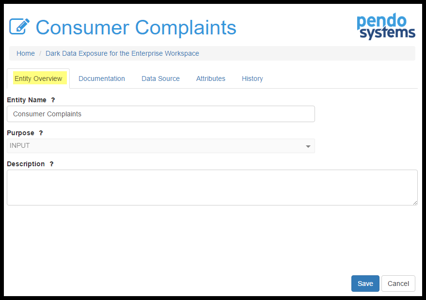
Here you may edit a user friendly Entity Name, see the purpose of the Entity (Source (Output) or Target (Input) and optionally add a Description.
Documentation Tab
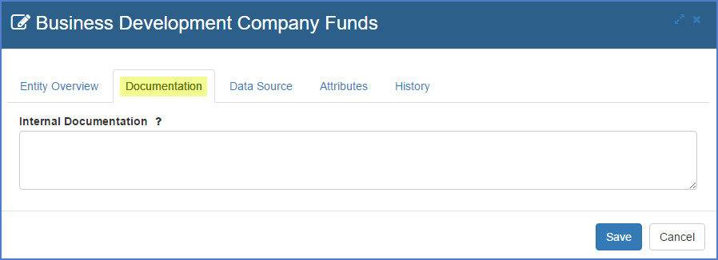
Optional free form text used for your internal purposes.
Data Sources Tab
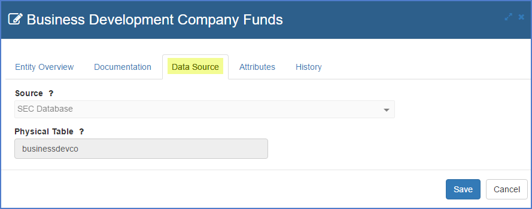
This is where you can see the Data Source and the actual Physical Table name from which the Entity came if it was imported as a Source Entity. This would be the File Name if you Uploaded a file, or the Table within the JDBC compliant database that was the data source. You cannot modify this.
Attributes Tab
Note: Please see the Attributes section below for all sub-screens.
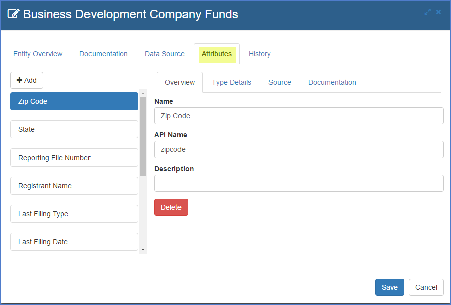
This is where you may review information about the Attributes that are contained in the Entity.
History
The Platform has the ability to keep a history of changes made to an Entity and its Attributes.
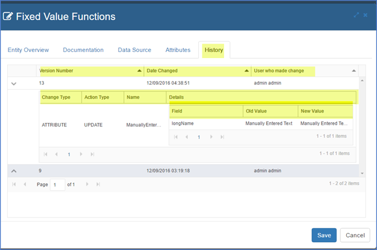
Whenever a User makes a change to an Entity Name, API Endpoint, or Adds, Removes or Updates an Attribute and clicks Save and Close, a new History number is generated and the change of state of the Entity is captured in the History log.
The function is accessed via the History tab while Editing an Entity.
Note that the History will provide a listing of the specific sub-item(s) that changed.
Items tracked include: the Version Number, Date of Change, User making the Change, the Change Type, Change Action, the name of the fields, the Type of the field and the Old and New Values.
The reader should understand that the concept of keeping a History of changes to the Entity encompasses any changes made to the Attributes that comprise said Entity. What this means is that Attributes will not have their own History numbers, but that the Entity History number will increment when changes are saved. For example, if the Entity History number was 2 and a User modifies the length of one of the Attributes, the new Entity History version number will become 3 and the new History log will show what has changed. If you think about this, any change to a part of the Entity, including its Attributes, modifies the Entity as a whole.
Reindex Selected
As you use the advanced capabilities of various Plugins, you may need to Rebuild Indexes. For example, if you have imported a Workspace, all the Entiies would need to be indexed. To rebuild a single index, highlight the Entity and click 'Reindex Selected'. When you do a Rebuild Index, you will get a popup screen:
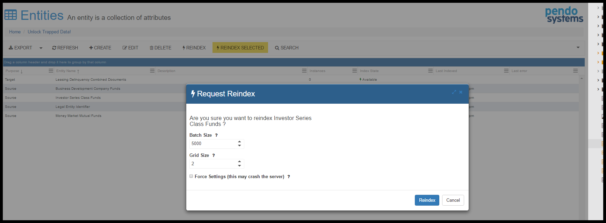
When dealing with Structured Data, the Batch Size is the number of rows of a database that will be brought into memory at one time. The ideal Batch Size depends on both the amount of memory in the server and the type of data with which you are dealing. The smaller the database tables, the bigger the Batch Size can be.
The Grid Size is ignored during indexing of Structured Data.
Rebuild Multiple Indices from one screen
Instead of re-indexing one Entity at a time, you may select for multiple Entities to be re-indexed. As you use the advanced capabilities of various Plugins, you may need to Rebuild Indexes. For example, if you have imported a Workspace, all the Entities would need to be indexed. To rebuild multiple indices click 'Reindex'. You will get a popup screen:
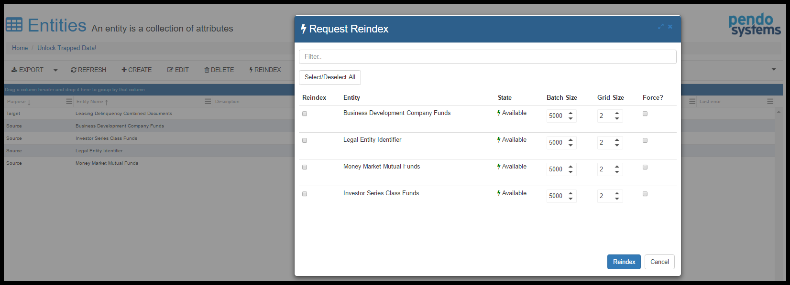
You many now select as many Entities to be re-indexed as needed. Note that there is a filter box at the top of the screen, allowing you to reduce the number of Entities that are displayed.
When dealing with Structured Data, the Batch Size is the number of rows of a database that will be brought into memory at one time. The ideal Batch Size depends on both the amount of memory in the server and the type of data with which you are dealing. The smaller the database tables, the bigger the Batch Size can be.
The Grid Size is ignored during indexing of Structured Data.
The Force column allows you to force the platform to use the entered Batch Size even if the platform suggests a small number. This may increase the chance of a server crashing.
Search
As soon as a JDBC database or .csv file is Imported, it is automatically run through the Platform’s Full-Text Search Index Engine to allow for searching through all data in the Workplace as if it was one big data source. Please see Unified Search.
Attributes
Attributes are a logical collection of data that are part of the Entity definition. A traditional way to think of this is that Attributes are the fields to the Entities tables.
This is where you add, delete or edit the Attributes of a Target Entity. Source Entities may not be modified.
Attribute Tabs
While editing a particular Entity, go to the Attributes tab.
Overview Tab
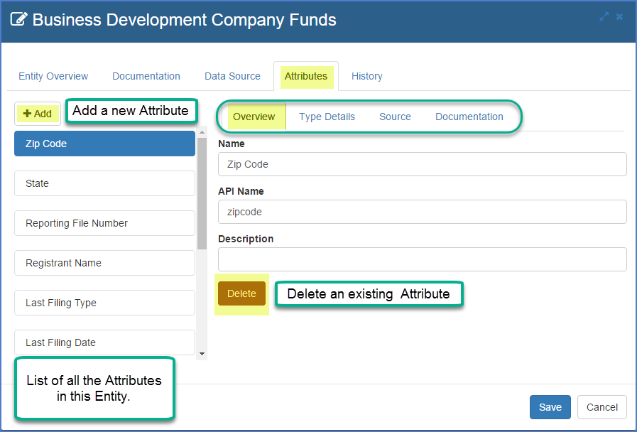
The Overview tab allows you to add/edit/delete the Attribute Name, API Name and Description.
Type Details Tab
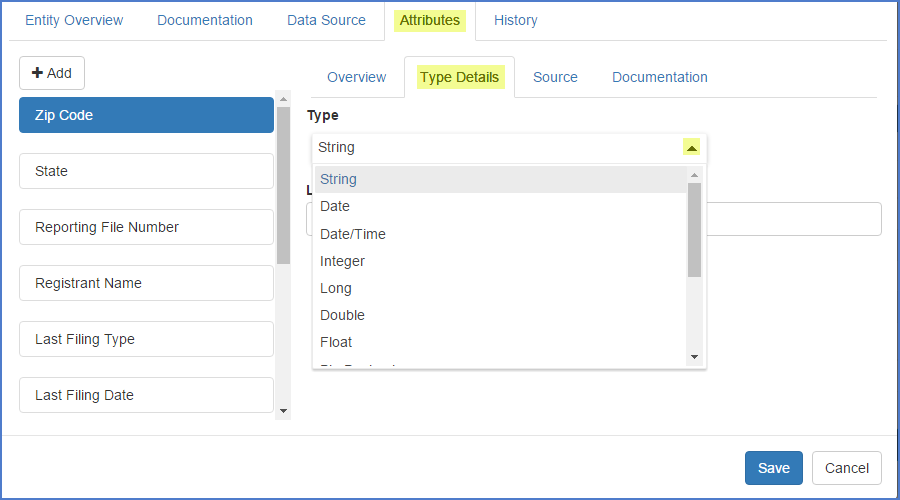
This is where you can see/edit the Type of the Attribute. Depending on the Type, other characteristics may become available. For example, with Type=String, Length becomes available. For Type=Date, the data format option becomes available.
Source Tab
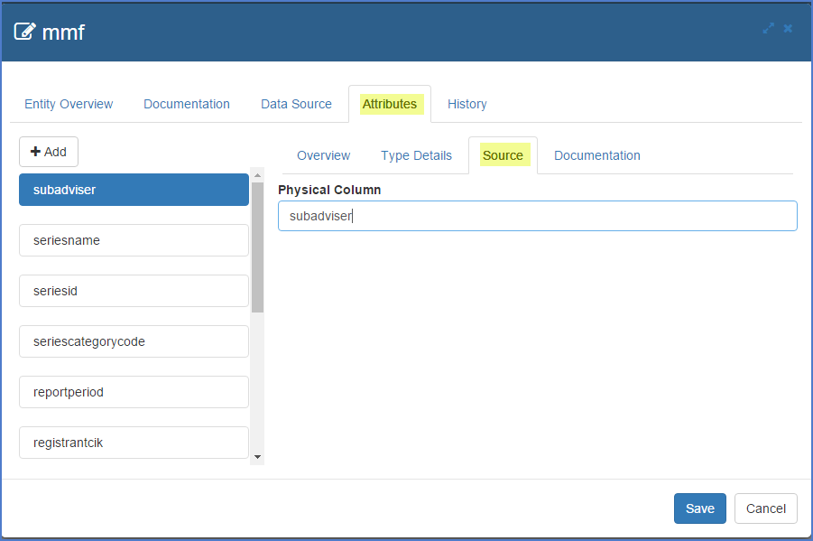
This is where you see the actual column name in the original database table if the Entity was imported as a Source. This cannot be modified. If the Entity is a Target Entity, this will be blank.
Documentation Tab
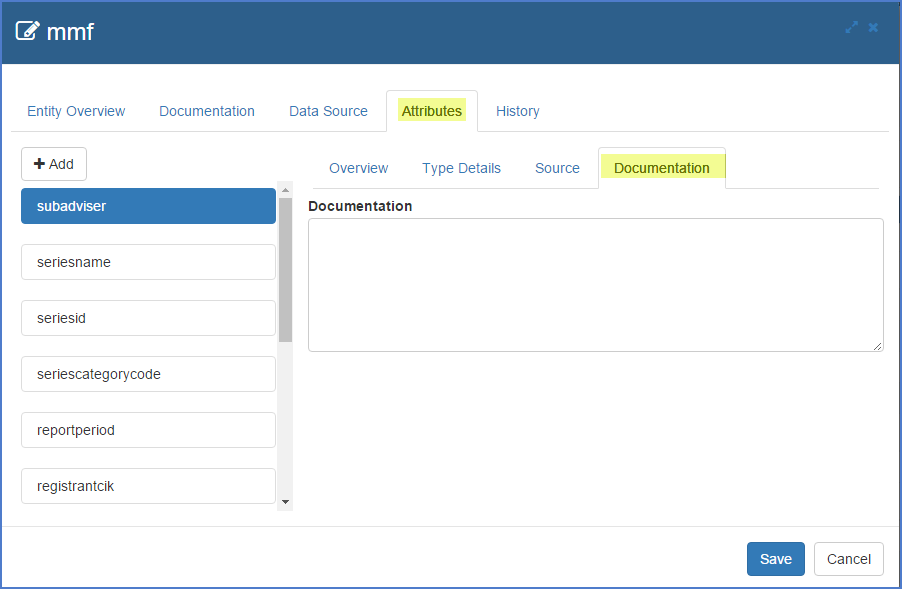
Enter in any project-base internal documentation notes you wish. This is free form text.
Related Entity Tab
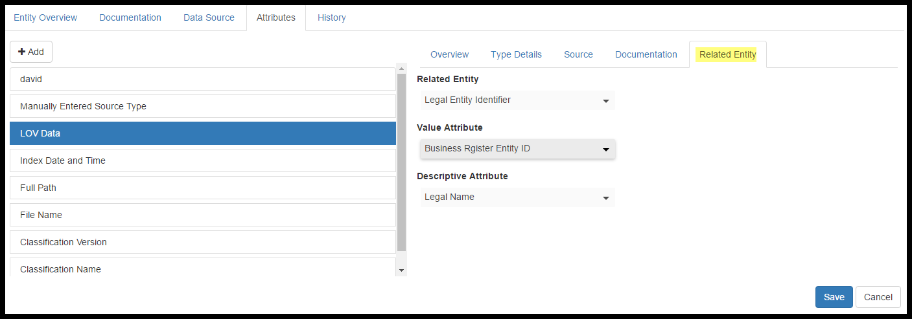
When creating a Target Entity, there is an option to reference data that already exits in another Entity. In order to use this feature, you would use the rest of the tabs in Attributes as normal and then go to the Releated Entity tab last. Here you can select:
- From which Entity the data is coming.
- The Value Attribute which contains the values that will be stored during the Attach Classification process
- The Descriptive Attribute which contains the values that will be displayed while editing a Document Class and Mapping to a special Fixed Value Mapping.
- The Value and Descriptive Attributes can be the same if desired. Please see the section on Document Classes for further information on this option.